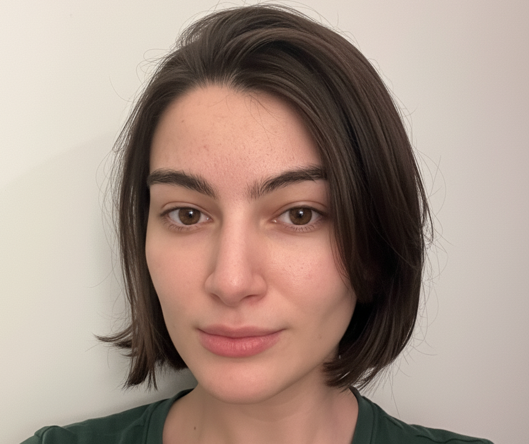

aliya bannayeva
TU Munich

Final semester master student at TU Munich. I did my thesis at the Chair for Database Systems under the supervision of Altan Birler and Prof. Thomas Neumann, on multi-join cardinality estimation using sketches. My current focus is on adaptive query optimization.
Outside of databases, my interests are mainly surrounding mathematics (concentration bounds) and materials science (crystallography). I'm always open to collaborating on interesting projects — please feel free to reach out for a chat.